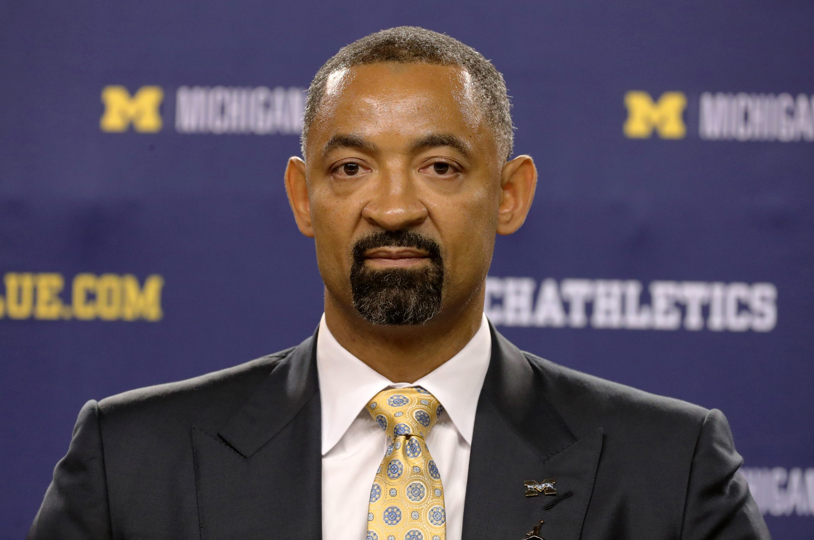

About the Team
The Michigan Wolverines Men's Basketball team is an NCAA Division I Big 10 team representing the University of Michigan. They have been playing since the year of 1908 and since then have a 61% win all-time record. Their home games are played in the Crisler Center which can hold about 12,000 spectators. In the history of NCAA tournaments, they have only one win which was in the year 1989 against Seton Hall. There are many Wolverines basketball players that have gone on to have NBA careers. A few that are currently playing in the NBA include Jordan Poole, Trey Burke, Moritz Wagner, and Tim Hardaway Jr.
About the Coach
Juwan Howard (born February 7, 1973) is an American former professional basketball player and current head coach of the Michigan Wolverines men's team. He was an assistant coach for the Miami Heat of the NBA from 2013 to 2019. Howard played in the NBA from 1994 until 2013. Before playing in the NBA, Howard was a basketball player at the University of Michigan from 1991-1994 and was part of a group called the "Fab Five."